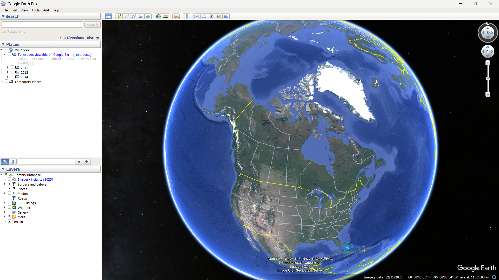
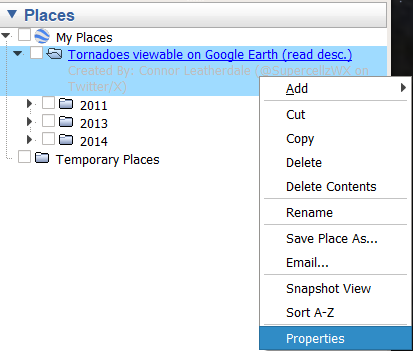
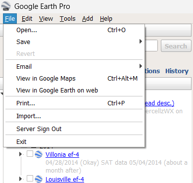

This project was created by myself. It contains all the viewable tornado's on google earth's satellite data, along with the export files from the DAT damage assessment.

If you have everything downloaded correctly, your places folder should look something like this. The main folder, and then folders containing the years (in this case, the photo is from an older version) The box next to each folder toggles the visability of all the files in each folder. Its recommended to only have 1 year toggled on at a time (you end up with hight RAM usage, and performance overall diminishes quite a bit).

if you right click any of the folders, or specific files, and open the properties tab, you can view some information about each file.How do I View It?
To view the data, you must have Google Earth Pro downloaded (download link is at the bottom of the page). Once you have set it up, download the zip file linked below and unzip it in a folder of your choosing.

Once you have that downloaded, next, you want to open up google earth, and then hit the file tab at the top, like the image beside, and hit open. This should open an explorer tab, and navigate to the folder you had just un-zipped. Inside should be a KMZ file, and open that. And there you go! If you're interested in the documentation, the paragraph above goes into detail.Download Link (file will be the current, up to date, version)
release: contains tornadoes from a few different years, 2011, 2013, and 2014.